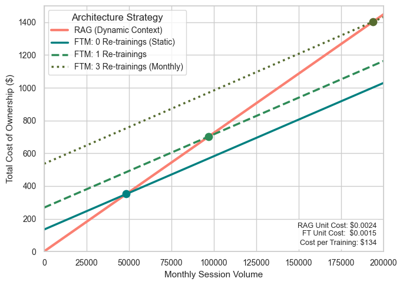

This research introduces a formal Total Cost of Ownership (TCO) framework grounded in Activity-Based Costing (ABC) tailored to the unique economics of Generative AI. It models LLM-specific cost drivers—such as token consumption, Retrieval-Augmented Generation (RAG) operations, and agentic inference steps—combining a provably convex infrastructure cost engine with an operational and governance taxonomy. Validated across production deployments with sub-5% forecasting error, the framework provides strategic decision support for evaluating architectural trade-offs, such as dynamic RAG versus fine-tuned models.
Ez a kutatás egy tevékenységalapú költségszámításon (ABC) alapuló, a generatív mesterséges intelligencia sajátos gazdaságtanára szabott formális teljes bekerülési költség (TCO) keretrendszert mutat be. Modellezi az LLM-specifikus költségtényezőket – például a tokenfogyasztást, a kereséssel kiegészített generálás (RAG) műveleteit és az ágensalapú következtetési lépéseket –, egyesítve egy bizonyíthatóan konvex infrastruktúra-költségmotort egy működési és irányítási taxonómiával. A termelési környezetekben, 5% alatti előrejelzési hibával validált keretrendszer stratégiai döntéstámogatást nyújt az olyan architekturális kompromisszumok értékeléséhez, mint a dinamikus RAG és a finomhangolt modellek összehasonlítása.
